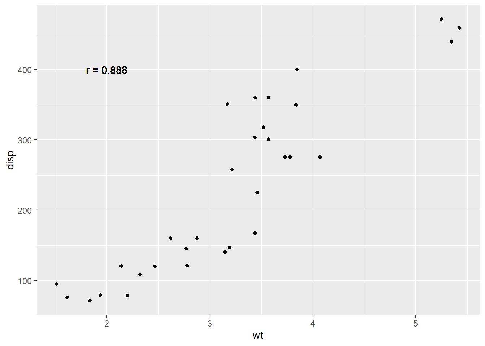
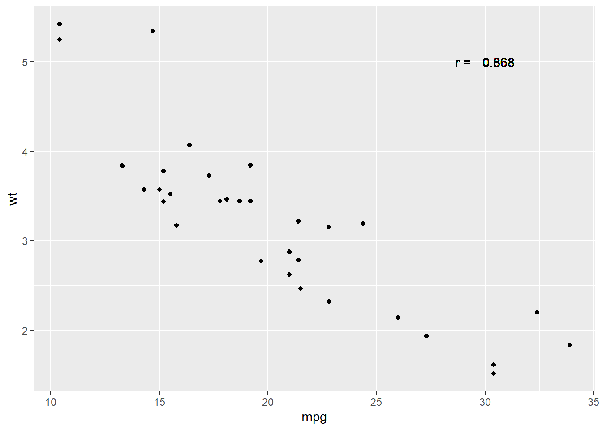
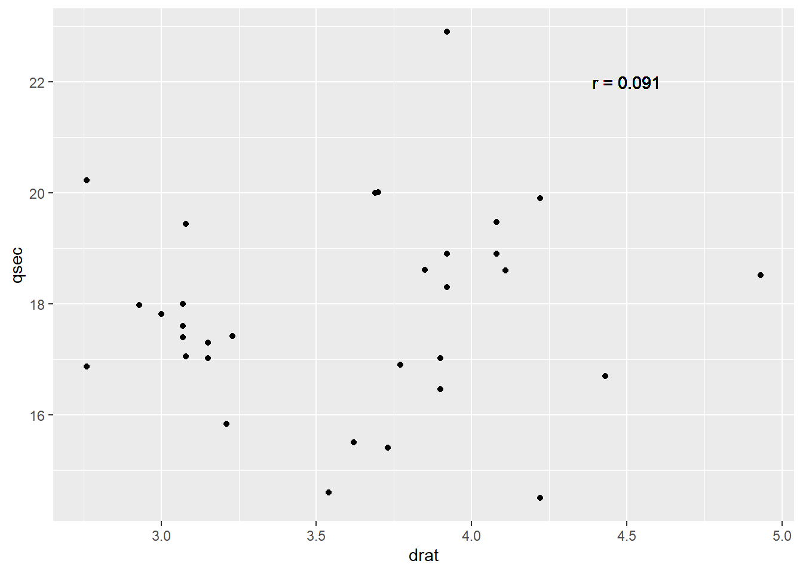
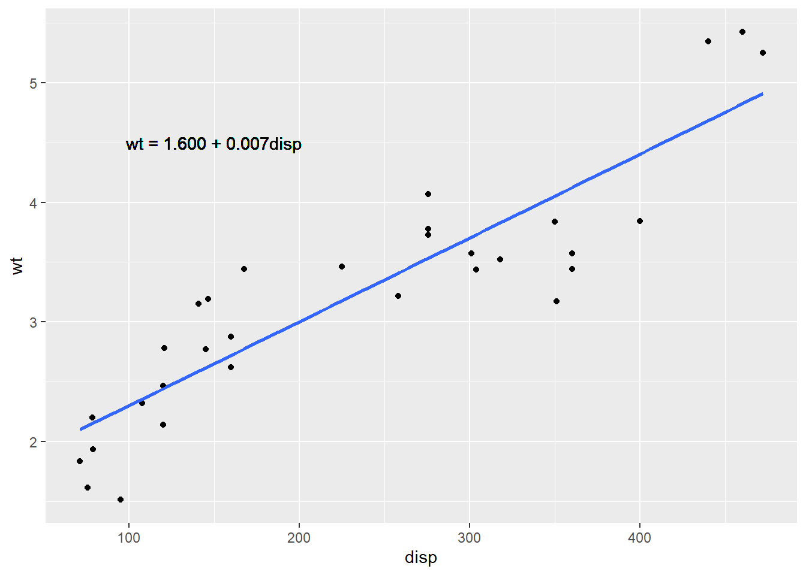

Code
# We can calculate the correlation coefficient between x and y with the following code.
# cor(x, y)r-function |
Description |
|---|---|
data('dataset_name') |
Load a R built-in dataset named by ‘dataset_name’ |
names(x) |
retrieve or set the names of elements in x |
attach(df) |
add a data frame df to the search path, which allows you to access the variables within the data frame df directly by their names instead of using a normal way such as df$var. |
cor(x,y) |
Find the correlation of two vectors x and y |
qplot(x,y,data) |
create a quick plot data (x,y) in the dataframe data |
geom_text(aes(x,y, label)) |
Add a label at the coordinate (x,y) in the current plot. |
lm(y~x, data) |
perform the linear regression of y~x, where y,x are column names in the dataframe data. |
summary(lm_model) |
summarize the linear model lm_model obtained by the R-function lm. |
We check if a linear correlation exists between two variables using cor() function.
# We can calculate the correlation coefficient between x and y with the following code.
# cor(x, y)library(tidyverse)
library(patchwork)
data("mtcars")
names(mtcars) [1] "mpg" "cyl" "disp" "hp" "drat" "wt" "qsec" "vs" "am" "gear"
[11] "carb"attach(mtcars)
# positive correlation
qplot(wt, disp, data = mtcars) +
geom_text(aes(x=2, y=400, label="r = 0.888"))
cor(wt, disp)[1] 0.8879799# negative correlation
qplot(mpg, wt, data = mtcars) +
geom_text(aes(x=30, y=5, label="r = - 0.868"))
cor(mpg, wt)[1] -0.8676594# no correlation
qplot(drat, qsec, data = mtcars) +
geom_text(aes(x=4.5, y=22, label="r = 0.091"))
cor(drat, qsec)[1] 0.09120476wt and disp have a positive correlation with r =0.888.wt and disp have a negative correlation with r = -0.868.wt and disp does not have a significant correlation with r = -0.175.Assume we have a data set data with x and y variables and we model their relationship by linear regression. We can find the slope and the intercept of the estimated regression line using the following code.
# res <- lm(y ~ x, data)
# summary(res)For example, we can find the regression line equation between disp (x-variable, predictor) and wt (y-variable, response) as below.
data("mtcars")
res <- lm(wt ~ disp, mtcars)
summary(res)
Call:
lm(formula = wt ~ disp, data = mtcars)
Residuals:
Min 1Q Median 3Q Max
-0.89044 -0.29775 -0.00684 0.33428 0.66525
Coefficients:
Estimate Std. Error t value Pr(>|t|)
(Intercept) 1.5998146 0.1729964 9.248 2.74e-10 ***
disp 0.0070103 0.0006629 10.576 1.22e-11 ***
---
Signif. codes: 0 '***' 0.001 '**' 0.01 '*' 0.05 '.' 0.1 ' ' 1
Residual standard error: 0.4574 on 30 degrees of freedom
Multiple R-squared: 0.7885, Adjusted R-squared: 0.7815
F-statistic: 111.8 on 1 and 30 DF, p-value: 1.222e-11The estimated regression line is wt = 1.600 + 0.007 disp since the intercept is 1.6 and the slope is 0.007. Both of them are significantly different from 0 with a significance level \alpha = 0.05 because their p-values are almost 0. The linear relation means that one inch increase in disp (displacement) makes 7 lbs increase in wt (weight). On average, if a car has a one-inch longer displacement, it is 7 pounds heavier.
If a car has 200 inches displacement, then its estimated weight can be calculated as 1.600 + 0.007\cdot200 = 3000 \textrm{ lbs}
We next use the R package ggplot to visualize the data set and the regression line.
ggplot(mtcars, aes(x=disp, y=wt)) + # define x and y
geom_point()+ # scatter plot
geom_smooth(method=lm, se=FALSE) + # add a regression line
geom_text(aes(x = 150, y = 4.5, label = "wt = 1.600 + 0.007disp")) #add a label